プロジェクトの歩み
2023年 8月
皆伐直後
奈良県御杖村 — 伐採開始
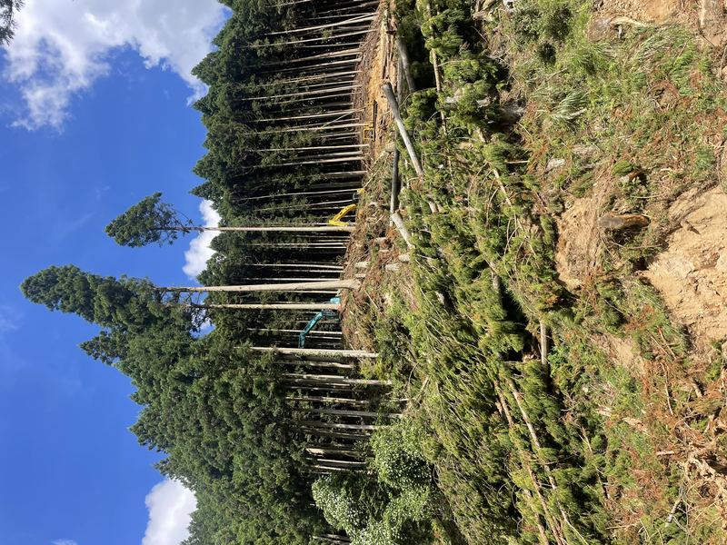
2023年 9月上旬
皆伐初期
伐採作業 進行中
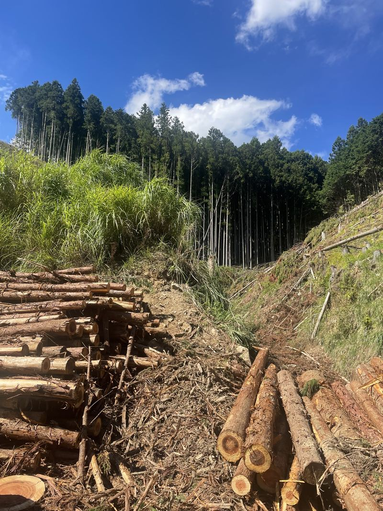
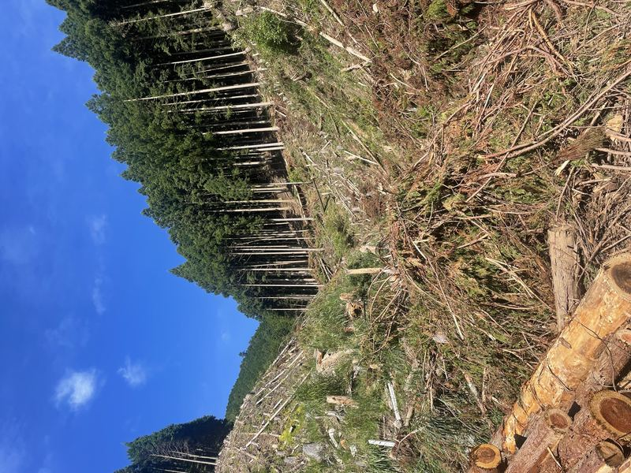
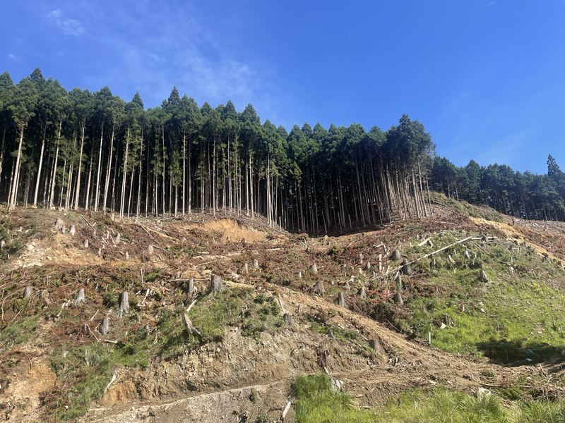
2023年 9月下旬
皆伐中
大規模伐採 本格化
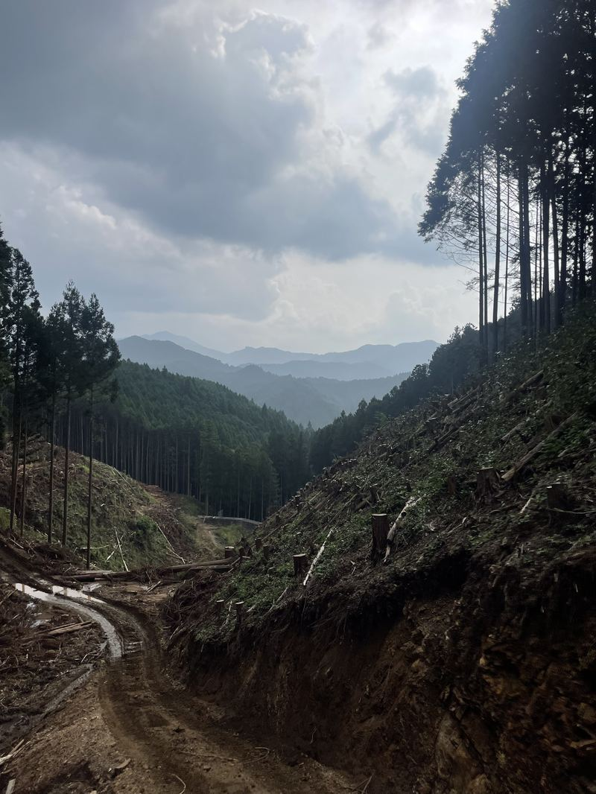
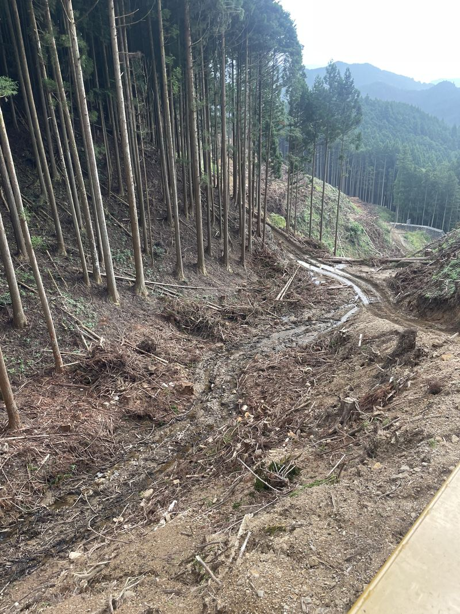
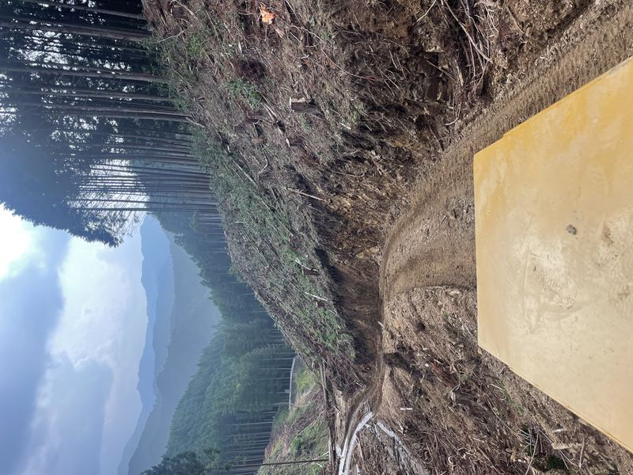
2023年 9月下旬
皆伐中旬
伐採作業 最終段階
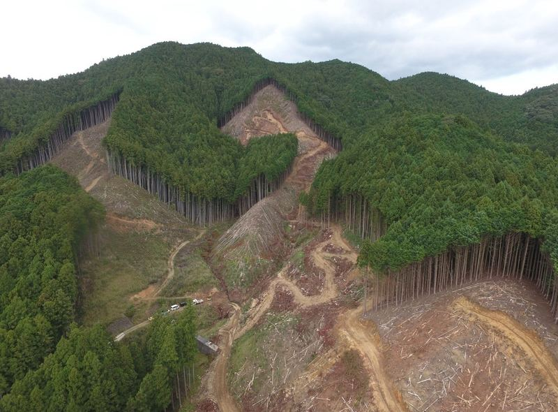
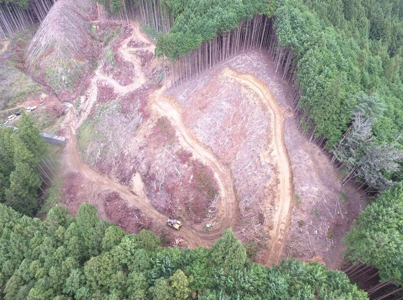
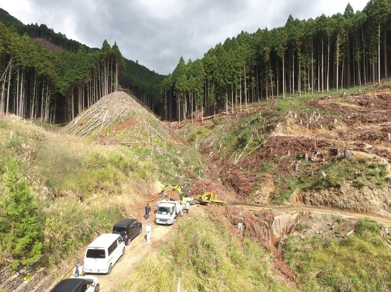
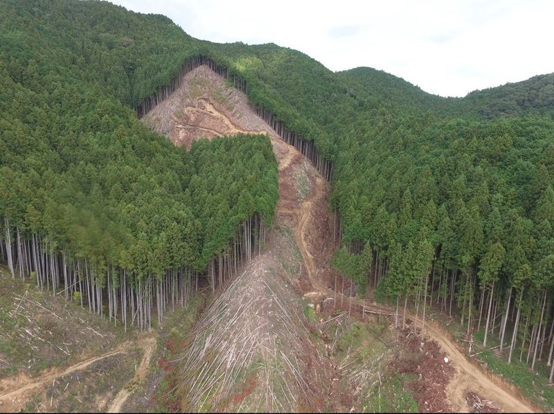
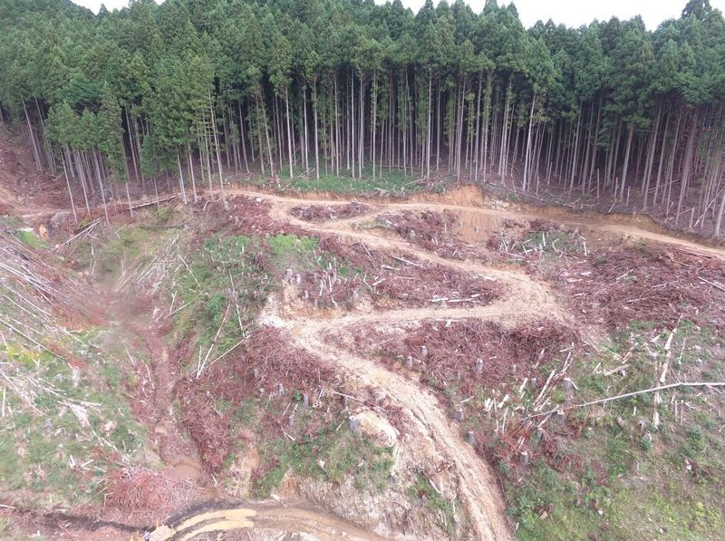
2024年
用地確定
奈良県御杖村 / 三重県嬉野
2025年
既存木 伐採完了
2026年 ← 今ここ
地拵え
植栽に向けた地面整備
2026年
植栽開始
メリクロン統一苗 40,000本
2031年
初回収穫
5年成木サイクル完了
2拠点の概要
奈良県 御杖村
三重県 嬉野
奈良県 御杖村
20ha
20,000本
三重県 嬉野
20ha
20,000本
合計 40ha・40,000本 国内早生桐 実績最大規模
SANSEIの3つの強み
🌱
メリクロン統一苗
組織培養技術による均一クローン苗。品質のばらつきゼロ。種苗登録申請中。
🛰
20ha 一体管理
広大な一体地をドローン・AI管理で効率運用。スマート林業を実践。
📜
種苗登録 申請中
京都皇帝早生桐の品種を国に登録申請中。登録後は30年間の独占的な繁殖・販売権が生まれる。
数字で見る早生桐
90t
CO₂吸収量
ha/年（GPP）
5年
成木サイクル
スギの1/10
40,000本
植栽本数
国内実績最大
50カ国
WeGrow展開国
500ha超
※CO₂吸収量・WeGrow展開国等の数値は算定条件下の理論値・参考情報であり、NCCCによる認証値ではありません。